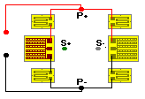

Circuits Refinements command
E01-Pattern resistors are bondable/adjustable resistors similar to D-Pattern resistors, except the two ladder networks are connected with a common solder tab. They are specifically designed to be permanently wired into the corner of a Wheatstone bridge.

In this position, one half of the resistor is typically in series with a compression gage and the other half is in series with a tension gage. This unique arrangement allows adjustment of both positive and negative bridge output resulting from initial bridge imbalance or zero shift with temperature change.
E01-Pattern resistors are available in several alloys and resistances. These, along with their typical uses are listed below:
| Type | Foil Alloy | Use |
| N2F-TR-E01-00005 | Copper | Zero shift with temperature change. |
| N2A-XX-E01-00060 | Constantan | Initial balance of bridges with constantan gages, typically below 350 ohms. |
| N2A-XX-E01-00180 | Constantan | Initial balance of bridges with constantan gages of, typically, 350 ohms. |
| N2A-XX-E01-00360 | Constantan | Initial balance of bridges with constantan gages, typically above 350 ohms. |
| N2K-XX-E01-00500/DP | Karma | Initial balance of bridges with Karma gages of, typically, 350 to 1000 ohms. |
| N2K-XX-E01-00750/DP | Karma | Initial balance of bridges with Karma gages, typically above 1000 ohms. |
Adjustments
E patterns have can be adjusted upward by cutting various ladder rungs.
Using an appropriate degree of magnification (preferably under a stereoscopic zoom microscope), locate the cutting points on the resistor pattern. Cuts may be made with the tip of a scalpel blade, or with a tool made by slightly flattening the end of a dental probe (Micro-Measurements Part No. DPR-1) Lightly cut through each end of the shorting bar and remove the center section leaving a path clear of foil. Care must be taken to avoid cutting through the backing to the specimen.
The approximate cuts to produce a desired overall pattern resistance can be estimated from the following information for the appropriate pattern; however, many variations may be employed and experimentation may be required to determine the optimum cutting sequence. For example, if steps are cut progressively downward starting from the top of any ladder (for all above patterns), very small changes in resistance are produced. Cuts made in this manner will represent larger changes as the step nearest the large solder tabs is approached.
Note that the actual resistance increase caused by cutting any given step can vary up to 20% of the nominal value. Therefore, it is desirable to plan a series of cuts that will allow the final resistance value to be approached slowly enough to avoid overadjustment. Fine adjustment can also be achieved by gently polishing active portions of the network with 325-mesh alumina powder. This procedure is not recommended when maximum stability is required, however.
The resistance values listed for E-Pattern resistors are the maximum obtainable -- after cutting all the ladder steps except the top rung of each row. For the E Pattern, the resistance is measured between the left and center terminals, or center and right terminals, with the corresponding shunt (G) cut.
The shunt (G) in each network of the E Pattern reduces uncut resistance approximately 25% and reduces adjustment increments of ladders A, B, E and F about 50% to increase resolution. With the shunts uncut, the resistance changes produced by cutting each upward step of a ladder as a percentage of Rmax are approximately 2.8%, 1.7%, 3.4%, 3.4%, 1.7% and 2.8%, respectively, for the ladders from left to right. Rmin for these patterns is about 0.08 Rmax.
With the shunts (G) cut, the E Pattern is essentially two D resistors with a common solder tab.